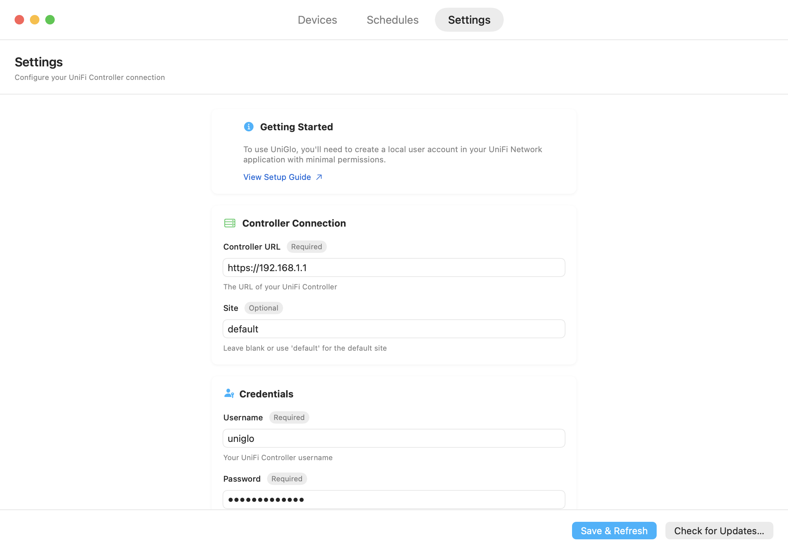

Get started with UniGlo
Six short steps: install the app, point it at your UniFi controller, and put your AP LEDs on a schedule.
Install UniGlo
- Download the latest release from GitHub Releases
- Unzip it and drag UniGlo into your Applications folder
- Launch it — UniGlo needs macOS 13 (Ventura) or later
UniGlo keeps itself up to date automatically via Sparkle — install once and you're set.
Create a local UniFi user
UniGlo signs in to your UniFi controller with a local user account. Here's how to create one:
- Open your UniFi controller web interface
- Navigate to Settings → System → Admins & Users
- Click Add Admin
-
Fill in the details:
- Name / Username: something like
uniglo - Password: a strong, unique password
- Role: Super Admin (required for LED control)
- Name / Username: something like
- Click Add to create the account
Important: this must be a local account, not a UI.com cloud (SSO) account. Local accounts are created directly in your controller settings.
Find your controller's address
UniFi Dream Machine / Cloud Key:
- Open the UniFi web interface on your local network
-
The IP address is in your browser's address bar — for
https://192.168.1.1, the address is192.168.1.1
Self-hosted UniFi Network application:
- Use the address of the computer running it, usually with port
8443— e.g.https://192.168.1.10:8443 - If it runs on the same Mac,
https://localhost:8443works too
Tip: most home networks use addresses starting with
192.168.x.x or 10.0.x.x.
Find your UniFi site name
The site name identifies which site on your controller UniGlo should manage. If
you've never created extra sites, it's default — you can leave the
field alone.
- Open your UniFi controller web interface
-
Look at the URL while viewing your site — the site name appears after
/site/, e.g.…/manage/site/default/dashboard
Configure UniGlo
Open UniGlo and switch to the Settings tab:
-
Controller URL: the address from step 3, including
https://— e.g.https://192.168.1.1 - Site: your site name from step 4 (or leave
default) - Username / Password: the local account from step 2
- If your controller uses a self-signed certificate (most do), enable Accept self-signed certificates
- Click Save & Refresh — your access points appear in the Devices tab

Security note: your credentials are stored in the macOS Keychain and only ever sent to your own controller. No third-party servers, no cloud.
Build your first schedule
- Switch to the Schedules tab and click Add Schedule
- Name it, then pick which access points it controls
- Add a rule per day with on and off times — weekdays and weekends can differ as much as you like
- Click Save Schedule
That's it. UniGlo applies your schedule automatically from here on out, and you can flip LEDs manually from the Devices tab any time — the schedule picks back up on its own.
Need more help?
Check the documentation on GitHub, or open an issue if you hit a snag.
View documentation